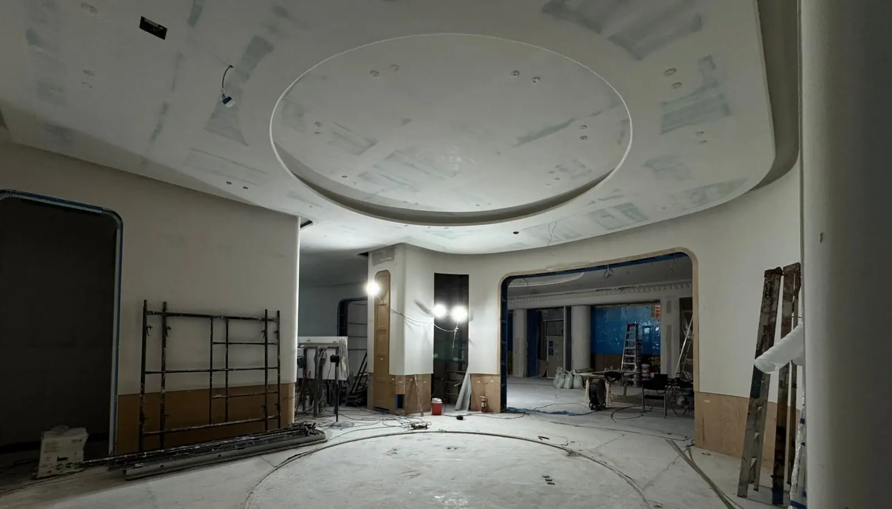

Le sel, le soleil et l’humidité attaquent une maison chaque jour : rouille sur les garde-corps, fuites en toiture, moisissure dans les placards, climatiseurs qui gouttent et pompes qui lâchent le jour de l’arrivée des clients. Au lieu d’appeler un artisan différent pour chaque problème, vous avez une équipe d’entretien avec électriciens, plombiers, peintres et menuisiers, des visites préventives planifiées et un rapport photo après chacune ; idéal si vous vivez à l’étranger ou louez votre bien.

Portes, serrures, sanitaires, joints silicone, petite menuiserie et tout ce qui s’use.
Fuites, surpresseurs, chauffe-eau, citernes, filtres et adoucisseurs.
Disjoncteurs, éclairage, prises, parafoudres et test du groupe électrogène.
Nettoyage et entretien des splits, évacuations de condensats et contrôle du gaz avant la saison chaude.
Contrôle de l’étanchéité, reprise des fissures, retouches de peinture et traitement antirouille.
Volets, arrimage du mobilier et des palmiers, nettoyage des descentes, contrôle de l’alimentation de secours.
Les grosses réparations sur la côte commencent petites : une fissure dans la membrane de toit devient une tache au plafond, un point de rouille un garde-corps cassé, une évacuation de clim bouchée un problème de moisissure. Une visite mensuelle ou trimestrielle les détecte à temps. Nous suivons une check-list par bien, documentons l’état en photos et vous envoyons un rapport : ce que nous avons réparé et ce qui demande votre décision.
Coûts annuels types dans notre guide coût d’entretien d’une maison au Mexique.
| Service | Comprend | Prix (MXN) |
|---|---|---|
| Intervention | Jusqu’à 2 heures, petites réparations | 650–1 200 |
| Contrat maison ou appartement | Visite mensuelle, check-list, rapport photo | 3 500–7 500/mois |
| Villa avec piscine et jardin | Contrôle hebdomadaire, clim, piscine, jardin | 7 500–15 000/mois |
| Préparation cyclonique | Volets, descentes, arrimage, test du groupe | 2 500–6 000/visite |
Pages utiles : Rénovation de Salle de Bain · Aménagement Paysager · Peinture de Maison · Rénovation de maison · Prix de construction
Une seule équipe pour réparations, visites préventives et urgences, avec rapports photo. Réponse en 2 minutes.
Demander un devis sur WhatsAppVotre avis aide d'autres propriétaires à décider, et nous aide à progresser.
Rédiger un avisVoir les avis Google